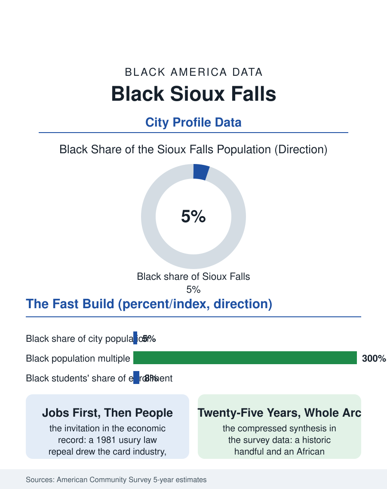

Black Cities
Written on the Prairie: Black Sioux Falls
Meatpacking, health care, and resettlement multiplied Sioux Falls' Black population in a generation, the Great Migration's blank prairie filled in at last. The Sioux Falls file.

Sioux Falls' Black community, roughly ten thousand people in a South Dakota metro of about three hundred thousand, around five percent of the city itself, is among the fastest-growing in this atlas in percentage terms: a population multiplied several times over since the century turned, drawn by the banking and health care economy of the state's metropolis and by refugee resettlement that made this prairie city one of the interior's most African new destinations. The census counts a community being built in real time. This article reads the Sioux Falls file.
Cards, Hospitals, and a New Map
Sioux Falls' modern economy rests on two pillars the national map knows: the banking and credit card industry, which colonized the city after the state's 1981 usury law repeal invited the card issuers in, and the two great health systems, Sanford and Avera, whose hospitals make the city the medical capital of a multi-state prairie territory. The historic Black community beneath them was small, railroad and service families maintaining the minimum institutional set through the twentieth century in the pattern of the plains files. The transformation came from outside: the meatpacking industry that long anchored the city's east side, the great pork plant whose workforce the company recruited across widening circles, and then the resettlement programs, which from the 1990s forward placed Sudanese, Ethiopian, Somali, Congolese, and Liberian families in Sioux Falls in substantial numbers, drawn by the plant's jobs, the housing's cost, and the resettlement agencies' prairie network. The city's Black population multiplied accordingly, its composition flipping within a generation from predominantly native-born to substantially African-born, and the east side's commercial landscape, groceries, restaurants, money services, remade itself in the arrivals' image with a completeness few American neighborhoods can match for speed.
The Numbers on the Prairie
The American Community Survey profile shows a young, working population inside one of the nation's lowest-unemployment metros. Employment concentrates in the packing plant and food processing, the hospitals, the card and banking operations, whose back-office thousands include a growing Black clerical and professional layer, and the warehousing that the interstate crossroads sustains, with median incomes trailing the metro's unusually prosperous average while poverty, elevated for the newest arrivals, declines across the residence-duration gradient the surveys can trace, the resettlement literature's standard curve of arrival poverty resolving into working stability over a decade. The schools carry the transformation's signature: the public system's Black enrollment share is multiples of the city's historic figure, its language services roster among the most diverse of any comparably sized American district, and its graduation data for the resettled cohorts have become a watched indicator in the state's education reporting. Housing remains the plains' relative bargain, the east side's modest stock functioning as the ownership ladder's first rung for families arriving with nothing, a pattern the deed records show operating at meaningful scale. The historic institutions and the new ones negotiate the familiar convergence, African congregations and immigrant associations rising alongside the older churches, sharing the community's civic representation in a state whose politics both court and scrutinize its newest citizens.
The Convergence on Fast Forward
Sioux Falls compresses into twenty-five years the synthesis that took Boise a century and Chicago three generations: a historic handful, an immigrant flood, a shared racial designation, and the slow construction of one community out of the materials. The file's open questions are the synthesis's standard ones with prairie inflections, whether the second generation's outcomes will track the immigrant file's optimistic arc in a labor market whose entry jobs are meatpacking's, whether the political representation will follow the population as it has begun to at the school board level, and whether the city's celebrated civic boosterism extends its embrace at the rate the newcomers' tax receipts entitle them to expect. The forward indicator the demographers watch is the simplest: the population keeps compounding, the community's share rising through every recent cycle, so that South Dakota, which entered the century as one of the least Black states in this atlas, now holds in its metropolis one of the interior's most dynamic Black files. The census counts ten thousand and rising. The east side's storefronts, in four languages and one shared designation, tell the count's story better than the bureau's tables can: the prairie, which the Great Migration's map left blank, is being written on at last, in a hand that arrived from Juba and Monrovia by way of the resettlement office, and stayed to raise the second generation under the wide sky.
More in Black Cities
Black Atlanta: Population, Distribution, and Growth of a Black Metropolis
Metro Atlanta holds more than two million Black residents — roughly one in three, second only to New York. The suburban distribution, migration history, and composition of Black Atlanta in the census data.
Black New York: The Largest Black Population in America
The New York metropolitan area holds about 3.4 million Black residents — more than any metro in the nation — and the city itself about two million. The census profile.
Black Washington: The District and the Metro
The Washington metro holds about 1.6 million Black residents, and the District itself — long a majority-Black city — now records a Black share near 41 percent. The census profile.
Source: U.S. Census Bureau, American Community Survey 5-year estimates for Sioux Falls, SD; South Dakota state demographer and resettlement program records.